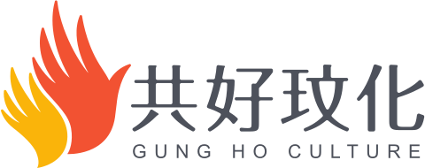
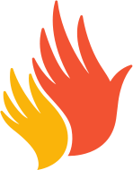

永續趨勢速報
國內外 ESG 政策更新、產業動態與市場趨勢，每週精選推送，讓你的永續知識始終保持前沿。
旅程位置：留存（Community）。唯一目標：一分鐘內加入官方 LINE（@381iutjm）。主要角色 P4 個人學習者、P1 品牌主；多數人從手機進來。
三案都遵守：手機上以大按鈕直接開啟 LINE App（QR 只在桌機顯示）；可複製 LINE ID 作為備案；不另外寫一份數字。
數字規則：現行頁面的 500+／50+／150+ 與首頁不一致，三案改用客戶時間軸可驗證的「100+ 場講座／500+ 人培力／10+ 縣市」（B、C），或完全不放（A）。QR Code 為占位，需由 LINE 官方帳號後台匯出正式圖檔。電子報 email 登記（J01）不在本次範圍。
單一目標頁 /join

回首頁
約 1 分鐘加入共好玟化 LINE 官方帳號——一個為永續實踐者打造的資訊與合作平台。
打開 LINE →「加入好友」→「行動條碼」，對準左邊的 QR Code。
還沒準備好？先讀讀看 共好學習 的永續文章。
手機上不顯示 QR Code（無法用同一支手機掃自己的螢幕），只給一顆大按鈕；桌機才出現 QR。頁面只有一個主要行動，不放數字與 CTA 區塊。
單一目標頁 /join
加入共好玟化的永續社群，與來自不同領域的實踐者一起，讓好的事被看見、被理解、被連結。
@381iutjm累計數字，資料來源：共好玟化 2025 年時間軸。與首頁數字統一由辭典 impact 提供（G06）。
畫面為示意，實際內容以官方帳號推播為準
加入好處
不只是資訊推播，更是一個持續學習、合作與成長的永續社群。
國內外 ESG 政策更新、產業動態與市場趨勢，每週精選推送，讓你的永續知識始終保持前沿。
ESG共學坊工作坊、國際論壇、企業參訪等活動搶先報名，把握每一次學習與交流的機會。
與農業、設計、科技、社會企業等不同領域的永續實踐者交流，創造跨界合作的無限可能。
會員專屬的永續白皮書摘要、顧問諮詢優惠、以及永續商城合作夥伴的獨家折扣。
如何加入
從加入到參與，只需要一分鐘。
與我們一起，讓每一個好的行動都被看見。
單一目標頁 /join
加入我們
加入共好玟化的永續社群，與來自不同領域的實踐者一起前進。你不需要一次走完，從加入 LINE 開始就好。
累計數字，資料來源：共好玟化 2025 年時間軸。與首頁數字統一由辭典 impact 提供（G06）。
每個人都可以從自己舒服的地方開始。
一分鐘完成，開始收到第一手資訊。